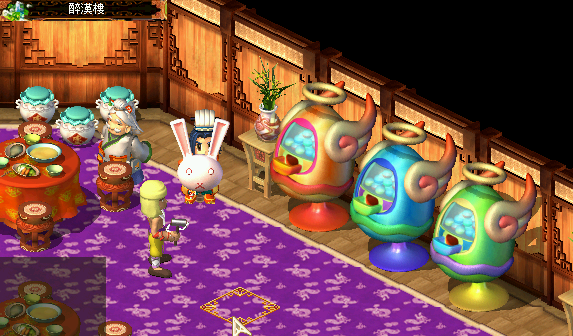

轉蛋系統
官方說明
連結：https://mo.lager.com.tw/mystina_ch2/egg.html
說明
玩家必須擺入等級總數大於轉蛋機規定等級的英雄卡片，才能夠獲得新卡。
舉例來說：
卡片轉蛋機需求等級是 50，玩家可以放置一張 LV30 的英雄卡，再放置一張 LV20 的英雄卡，即可達到需求轉出蛋蛋。
(假如需求等級 100，交換格數 3 格，可擺兩張 50 級，或 50+30+20 等組合。)
注意事項
- 系統或是任務獲得的英雄卡不可轉蛋！(包含驃騎將軍、天策軍師、瑤池仙女、黃金聖鬥士及搏浪力士等)
- 轉蛋機中的卡片數量有限，被轉完後需等到下週補貨後才有蛋蛋。
| 轉蛋機 |
交換等級 |
交換格數 |
最大獎勵 |
| 金色轉蛋機 | 100級 | 3格 | 1020 |
| 藍色轉蛋機 | 100級 | 5格 | 950 |
| 綠色轉蛋機 | 50級 | 10格 | 870 |

▲ 轉蛋機位置：醉漢樓 (梁山)